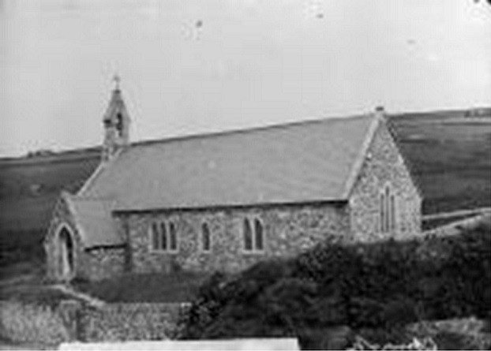
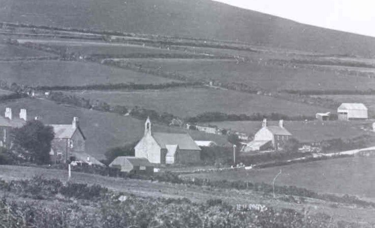

Eglwys St Iago
Mae’r eglwys wedi ei chysegru i Sant Iago. Cyn iddi gael ei chysegru yn 1882, i ddiwallu’r angen am eglwys yn y pentref oherwydd newid yn y boblogaeth. cynhelid gwasanaethau eglwysig yn Ysgol Genedlaethol Llithfaen. Byddai’r hogiau lleol yn mynd i’r eglwys ar nos Sul i gael hanes bwganod gan y Parch Michael Jones, neu Michaelions fel yr hoffai gael ei alw. Byddai ysgol Sul yn yr eglwys yn y 1950au a’r ysgol Sul yn boblogaidd oherwydd yr arfer o rannu fferins i’r plant!
Dyma lun agos o Eglwys St Iago ( Ffotograffydd : John Thomas 1838-1905)Eglwys Carnguwch oedd eglwys wreiddiol y plwyf. Mae rhai yn credu ei bod wedi ei chysegru i Sant Cuwch tra cred eraill mai Beuno oedd nawddsant y plwyf. Fodd bynnag, gwyddom i ysgolion Gruffudd Jones, Llanddowror fod yn llewyrchus iawn yn Eglwys Carnguwch ar un adeg.
Bu gwasanaeth eglwysig yn ysgol Genedlaethol Llithfaen cyn cysegru eglwys St Iago, yn 1882 a’r ysgol honno yn ysgol eglwys. Yn 1882 aeth yr ysgol i berthyn i’r Cyngor Sir ac agorwyd eglwys St Iago er mwyn diwallu’r angen am eglwys yn y pentref oherwydd newid yn y boblogaeth. Yng nghyfrifiad 1901, 112 oedd poblogaeth plwyf Carnguwch.
Byddai’r hogiau yn mynd i’r eglwys yn y pentref ar nos Sul i gael hanes bwganod gan Michaelions, sef y Parch Michael Jones ond hoffai gael ei alw yn Michaelions. Byddai ysgol Sul yn yr eglwys yn y pumdegau a’r ysgol Sul yn boblogaidd oherwydd bod arferiad o rannu fferins i’r plant!
Y Genedl Gymreig, 19 Ionawr 1887
"LLITHFAEN. Cynhaliodd degwm-dalwyr plwyfi Pistyll a Charnguwch, gyfarfod lluosog a dylanwadol yn Yogoldy y Bwrdd, yn y lle uchod, nos Lun, lonawr 10fed. Cymerwyd y gadair lywyddol gan y Parch R. Jones. Ymddengys fod degwm-dalwyr y plwyfi uchod wedi pentyru marwor tânllyd ar ben y Parch J. Morgans, perchenog cyfreithiol y degwm, trwy anfon tri chais ato am ostyngiad y cyfryw; ond, yr unig atebiad a gafwyd i'r ceisiadau hyn ydoedd: — “Fod Mr Morgans yn analluog i weithredu oherwydd yr undeb a fodolai rhyngddo ef a'i gyd-glerigwyr, pa rai nad oeddynt yn rhoddi gostyngiad yn y degymau a berchenogant; ond dywedai yn mhellach ei fod yn barod i wrandaw cwynion personau unigol ag yr oedd arnynt wir angen,” i'r hyn yr atebodd un amaethwr trwy ddyweyd eu bod oll mewn gwir angen, ac mai dyma y rheswm iddynt erfyn am ostyngiad fel cyfangorph. Dywedai amaethwr arall nad oeddynt hwy fel degwm-dalwyr am restru eu hunain yn yr un dosbarth a'r rhai hyny fydd yn myned o amgylch i gardota, a myned 7 milltir o ffordd i Edeyrn at berson i ymofyn cardod. Yn ngwyneb y gwrthodiad hwn o gais rhesymol, teg a gostyngedig o eiddo yr amaethwyr sydd yn cael eu gorlethu â beichiau trymion ac anhawdd eu dwyn, pasiwyd y penderfyniadau canlynol – sef
1. "Ein bod yn benderfynol o wrthod talu y degwm heb ostyngiad yn y cyfryw, ond trwy atafaeliaeth ar ein heiddo."
Llawnodwyd deiseb gan agos yr oll o'r degwm-dalwyr yn ymrwymo i sefyll at y penderfyniad uchod.
2. “Ein bod i ymuno a'r Cyngrair Gwrth-ddegymol."
3. “Ein bod yn rboddi gwahoddiad i'r, trindod canlynol i ddod yma i gynhal cyfarfod cyhoeddus mor fuan ag y gellir, sef y Mri John Parry, Llanarmon; W. Anthony, Pwllheli, a Lloyd George, Cricieth."
Nid oes bellach i'w ddisgwyl ond rhyfel hyd y cam; amaethwyr, ymwrolwch a chofiwch nad ydyw ein rhyfel yn erbyn gwaed a chnawd, ond yn erbyn trais a gormes, nid yn erbyn personau, ond yn erbyn egwyddorion— y mae yn bosibl caru y personau ac ar yr un pryd gashau eu hegwyddorion â chas cyflawn. Byddwch wyr, os ydyw eich traed mewn gefynau heiyrn, ac os ydych yn gorfod cario ar eich gwarau yr amaethwyr disail, diddrwg, di-dda, diddim, fel "corph y farwolaeth hono, dangoswch fod ychydig nerth yn aros ynoch eto trwy ymafael yn ngholonau sefydliad gwladol John Bull-y sefydliad hwnw sydd yn troi ar echelau y degwm—protestiwch yn erbyn y fath orthrwm, dywedwch yn eich yraddygiadau tuagato fel y dywedodd un o ysgrifenwyr galluog Prydain Fawr am dano: Ni fedr cyfanforoedd o rawn ceffyl, na chyfandiroedd o grwyn defaid byth wneuthur anghyfiawnder yn gyfiawn." Ni waeth faint amddiffynir arno, mae a ysgrifenir i'w gyfiawnhau, nac o ddeddfau i'w gadarnhau, y mae yn aros er y cyfan yn annghyfiawnder. Pa beth sydd yn fwy annghyfiawn na bod Cymry Ymneillduol yn talu at gynhaliaeth Eglwys Loegr yn Nghymru, gwasanaeth yr hon nad yw dderbyniol ganddynt. Disgwyliwn, bellach, yn ddyfal am weision ffyddlawn rhai o’r anwyl gariadus frodyr, sef y “labwyr hyd lwybrau trueni,” chwedl Twm o'r Nant—y bwmbeiliaid, a'r auctioneers, neu gydymffurfiad â'n cais rhesymol ac amserol, sef gostyngiad syweddol yn y degwm ag y mae sefyllfa bresenol amaethyddiaeth yn ei gwneathur yn anmhosibl i ni ei dalu yn llawn.— Caethwas Gwyn."
The Cambrian News and Meirionethshire Standard, 30 Ionawr 1880
LLITHFAEN. — A correspondent writes: It is seldom that the numerous readers of the Cambrian News meet with this name on the sides of their wide spreading paper. Llithfaen is a beautiful village situated about seven miles northward of the Cardigan Bay, and sixteen miles distance from Carnarvon. The place stands on the side of the Eifl mountains, in the parish of Pistyll. The locality is considered as one of the healthiest in Wales. The air is pure, and its springing waters exceedingly clear, good, and tasteful. During the last five years the place has greatly improved. There are not less than six granite quarries in the same parish, and all in full working order and promising well. During the summer season the place is visited by many persons from different parts of England and Wales. The view from the Eifl mountains is most interesting and delightful. On one of the summits the interesting remains Tre y Ceiri (Giants' town), well deserve a visit.
THE SCHOOL BOARDThe Committee of Council on Education gave notice some six years ago that a School Board should be formed at the place. The parishioners carried the order into operation, so we have a School Board but I regret to state that the results of the grants for the past years were not so satisfactory as we expected. But our School Board will undoubtedly manage to overcome the drawback of grants for the ensuing years. They have now bought a schoolroom (the church at the place) for their own use entirely, and intend to enlarge and improve it; also to build a house for the teacher, which will most likely cause less cnanga of teachers than in previous years. Therefore, we may expect better schooling and better grants in the future.
THE CHURCH. — Inasmuch as our church building is sold to the School Board, a new church is on the point of being erected. This is just the right thing in the right place. A new church is really wanted at Llitbfaeii, the old one being too small and inconvenient for the present congregation. The church is now very flourishing and blooming, through the energy and efforts of our new curate, Mr. Owen. I may add that Mr. Owen has but recently been appointed as the curate of this place. He was a student of St. Bees' College, Birmingham, and has passed all his examinations with credit, as well as the Cambridge Preliminary Examination. Though we have had as yet but little experience of Mr. Owen, yet we can conscientiously state that he is an earnest and faithful preacher. Mr. Owen is a native of Talybont, Ceredigion. EIFLIAN.

Dyma lun Eglwys St Iago o ochr isaf y pentref